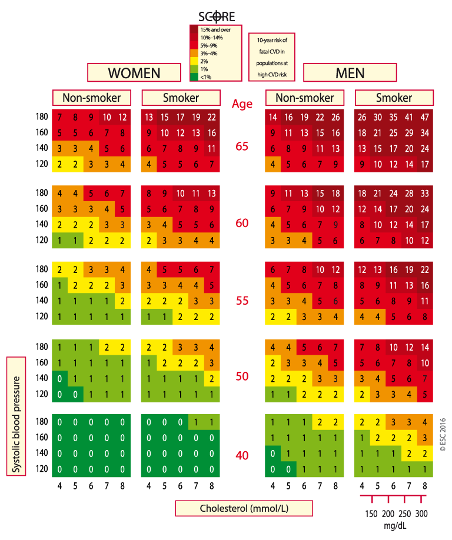
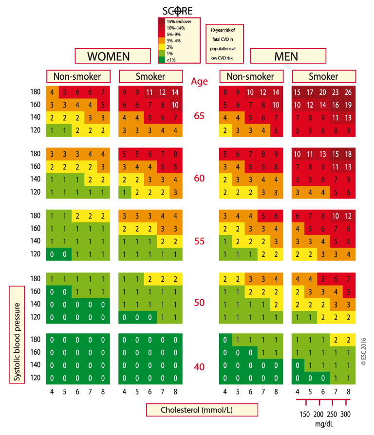

SCORE chart: 10-year risk of fatal cardiovascular disease in populations of countries at (VERY) HIGH cardiovascular risk based on the following risk factors: age, sex, smoking, systolic blood pressure, total cholesterol.
CVD = cardiovascular disease; SCORE = Systematic Coronary Risk Estimation.
High or very high-risk countries are: Albania, Algeria, Armenia, Azerbaijan, Belarus, Bosnia and Herzegovina, Bulgaria, Croatia, Czech Republic, Estonia, Egypt, Georgia, Hungary, Kazakhstan, Kyrgyzstan, Latvia, Lithuania, Macedonia FYR, Moldova, Montenegro, Morocco, Poland, Romania, Russian Federation, Serbia, Slovakia, Syrian Arab Republic, Tajikistan, Tunisia, Turkey, Turkmenistan, Ukraine and Uzbekistan.
SCORE chart: 10-year risk of fatal CVD in populations of countries at LOW CV risk based on the following risk factors: age, sex, smoking, systolic blood pressure, total cholesterol.
CVD = cardiovascular disease; SCORE = Systematic Coronary Risk Estimation.
Low-risk countries are: Andorra, Austria, Belgium, Cyprus, Denmark, Finland, France, Germany, Greece, Iceland, Ireland, Israel, Italy, Luxembourg, Malta, Monaco, The Netherlands, Norway, Portugal, San Marino, Slovenia, Spain, Sweden, Switzerland and United Kingdom.